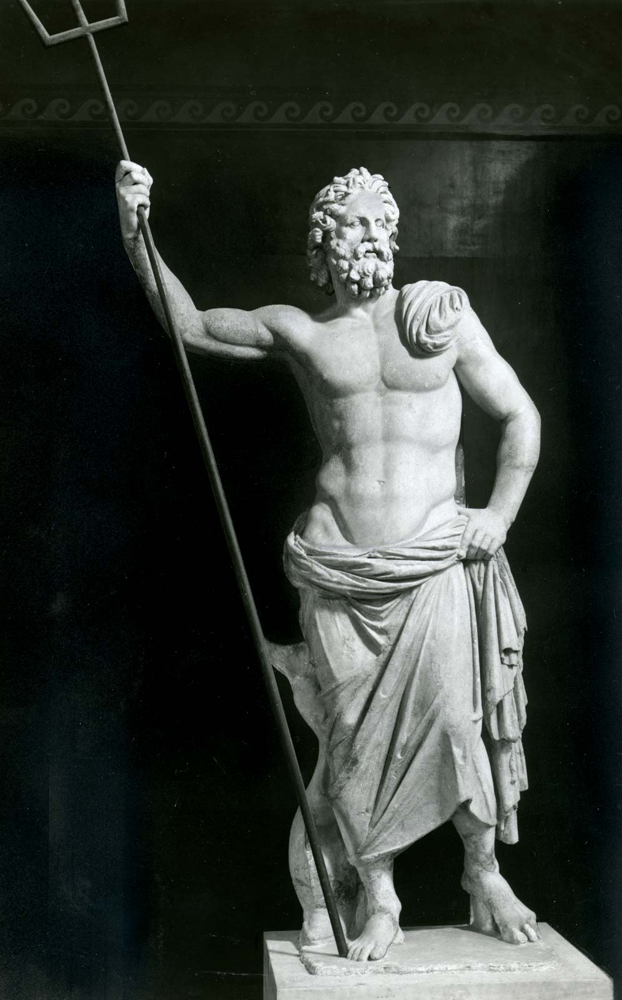
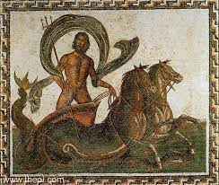

This is Posiden, in the greek mythology he is know as the god of the sea
this means water aswell. He is also the god of earthquakes and horses.

in Greek Mythology Posiden created horses and there are two stories behind why he
did so in the first story he wanted to impress the goddess demeter as he has fallen
in love with her. After some time Posiden had created the horse, However after taking
so much time creating the horse Posiden had fallen out of love with the Goddess.
The other story shows the rivalry between him and the Goddess Athena both of which
wanted to be the patron god/dess of athens.To win over the leader of athens they both
presented gifts to the leader. Athena Had created the olive tree which gave wood, olive oil
and olives. In this version of the story Posiden creaes the horse to help out the city-state
of athens as then help in work,battles and transprtation.In another story he creates a well of
sea water instead of the horse.In both stories Athena wins the contest since this contest
Athena and Posiden have been rivals.